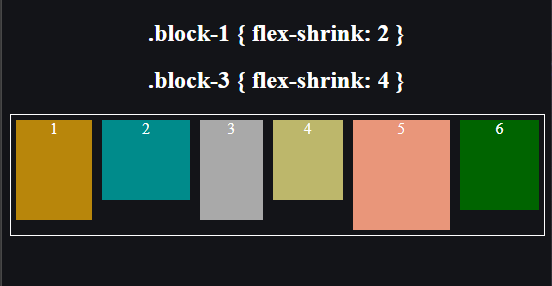

Flexbox в CSS
Flexbox, или Flexible Box Layout, это модуль макета CSS, который делает создание гибких и адаптивных макетов проще. Он особенно полезен для создания макетов на основе сетки и выравнивания элементов внутри контейнера.
Основная идея заключается в "flex контейнере", который является родительским элементом, содержащим один или более "flex элементов", которые являются дочерними элементами. Применением свойства display: flex к элементу контейнера можно сделать все его дочерние элементы flex элементами.
После того, как контейнер задан как display: flex, вы можете использовать различные другие свойства flexbox для контроля макета его дочерних элементов.
flex-direction
flex-direction - контролирует направление flex элементов в контейнере. Значение по умолчанию равно row, что означает, что элементы будут расположены в горизонтальной строке. Другие возможные значения включают column, row-reverse и column-reverse.
justify-content
justify-content - контролирует выравнивание flex элементов вдоль основной оси (горизонтально для row и вертикально для column). Значение по умолчанию равно flex-start, что означает, что элементы будут выровнены по началу контейнера. Другие возможные значения включают center, flex-end, space-between и space-around.
align-items
align-items - контролирует выравнивание flex элементов вдоль поперечной оси (вертикально для row и горизонтально для column). Значение по умолчанию равно stretch, что означает, что элементы будут растягиваться, чтобы заполнить контейнер. Другие возможные значения включают center, flex-start, flex-end и baseline.
flex-wrap
flex-wrap - контролирует, будут ли flex элементы переноситься на следующую строку, когда им не хватит места в контейнере. Значение по умолчанию равно nowrap, что означает, что элементы не будут переноситься. Другие возможные значения включают wrap и wrap-reverse.
flex-grow
flex-grow - контролирует, насколько flex элемент будет расти относительно других элементов в контейнере. Значение по умолчанию равно 0, что означает, что элемент не будет расти. Положительные значения приведут к росту элемента, а отрицательные значения приведут к уменьшению.
flex-shrink
flex-shrink - контролирует, насколько flex элемент будет уменьшаться относительно других элементов в контейнере, когда не хватает места для всех. Значение по умолчанию равно 1, что означает, что элемент будет уменьшаться.
flex-basis
flex-basis - контролирует начальный размер flex элемента до любого роста или сужения. Значение по умолчанию равно auto, что означает, что элемент будет использовать свою внутреннюю величину.
В дополнение к этим свойствам, вы также можете использовать align-self для контроля выравнивания отдельных flex элементов и order для изменения порядка flex элементов.
Flexbox предоставляет мощный и гибкий способ создания адаптивных макетов на основе сетки. С немного практики, вы сможете создавать сложные и красивые макеты с легкостью.